How to use this lesson
§0 · From last time. Lesson 1.3 gave us the five-question framework to decide whether to use an agent. For the scenarios where the answer is "agent," we still need to choose which agent shape. Four paradigms dominate the literature, each with a distinct loop structure, cost profile, and failure mode. Picking one is an architectural commitment; picking wrong is expensive.
Business Scenario
Helix Research, Wednesday lab meeting.
Maya Sundaram (CSO) is reviewing the literature-triage prototype. Her newest hire, an ML intern named Akash, has been "trying things out" for two weeks and has built four parallel implementations:
"Right, so I've got ReAct, Reflexion, Plan-and-Solve, and CodeAct versions. ReAct works best on the easy papers. Reflexion has the highest accuracy but takes 3× longer. Plan-and-Solve is fastest for the multi-step ones. CodeAct can do everything but I can't read its traces. Which one are we going with?"
Maya needs to give Tom (her ML lead) an architectural answer that's not "pick the one with highest accuracy on the eval set." Because:
- The eval set is small and may not generalise.
- The cost profiles differ by 5× and Helix has a token budget.
- The four paradigms aren't substitutes — they have different competences. The right answer might be hybrid.
Bridge to Topic
The four paradigms aren't competitors. They're tools. Each was designed to solve a specific problem the others can't, and each has a corresponding cost. Choosing well means knowing what each was for, not which scored best on Akash's eval.
Mind Map

Mermaid source
mindmap
root((Agent Paradigms))
ReAct
Thought-Action-Observation
Yao 2022
Tight loop
Lowest cost
Reflexion
ReAct plus self-critique
Shinn 2023
Retry with lessons
Quality at cost
Plan-and-Solve
Plan upfront
Wang 2023
Re-plan on failure
Best for multi-step
CodeAct
Actions as code
Wang 2024
Compositional
Hard to debug
Hybrid
Plan-and-Solve with ReAct subloops
Most common production
Takeaway: four pure paradigms, one hybrid that dominates production. Pure paradigms appear in papers; hybrids ship.
Elaboration
4.1 ReAct (Yao et al. 2022) — the baseline
Loop structure: Thought → Action → Observation → repeat → Answer.

Mermaid source
stateDiagram-v2
[*] --> Thought
Thought --> Action
Action --> Observation
Observation --> Thought
Thought --> Answer
Answer --> [*]
The model emits its reasoning and its tool call in a single autoregressive stream. The observation (tool result) is appended to context, and the model reasons again. This is the architecture Sherpa will adopt in Module 4.
Strengths: simplest loop, lowest token cost per step, easiest to debug (the trace is linear), no overhead. Best when each next step is genuinely revealed by the previous observation.
Weaknesses: no explicit planning, so it can wander on multi-step tasks. No self-critique, so it doesn't catch its own errors. No memory across runs, so it can't learn from past mistakes within a session.
Use when: the task is well-scoped, ≤10 steps, and each step depends on the previous result (so planning ahead would be premature).
4.2 Reflexion (Shinn et al. 2023) — ReAct + self-critique
Loop structure: ReAct attempt → Critic evaluates trace → If failed, store lesson → Retry.
The critic is an LLM call that reviews the trace and either accepts the answer or writes a "lesson" (a short natural-language note) that gets prepended to the next attempt's context. Up to N retries.
Strengths: higher accuracy on tasks where the agent can recognise its own errors post-hoc. Useful when ground truth is expensive but error signal is cheap (e.g., code that compiles vs doesn't; math that satisfies constraints vs doesn't).
Weaknesses: N× token cost (each retry runs the full ReAct loop). The critic's quality bounds the agent's improvement — if the critic can't recognise a failure, Reflexion can't fix it. Latency multiplies similarly.
Use when: accuracy matters more than cost, the task has a checkable answer, and the eval can tolerate variable latency.
4.3 Plan-and-Solve (Wang et al. 2023) — explicit planning
Loop structure: Plan → Execute step → Check progress → Execute step → ... → Answer (or re-plan on failure).
The plan is generated up front by a single LLM call and represents a small DAG of sub-tasks. Execution then proceeds with simpler (often non-LLM) per-step actions until a step fails, triggering a re-plan.

Mermaid source
flowchart TD
Start([Task]) --> Plan[Generate plan]
Plan --> Step1[Execute step 1]
Step1 --> Check1{Step OK?}
Check1 -->|yes| Step2[Execute step 2]
Check1 -->|no| Replan[Re-plan]
Step2 --> CheckN{Done?}
CheckN -->|no| Step1
CheckN -->|yes| Answer([Answer])
Replan --> Plan
Strengths: explicit plan is auditable and editable; per-step cost is low (planning is one LLM call). Tight time budgets are achievable. Multi-step tasks with clear sub-structure are this paradigm's home.
Weaknesses: brittle when the plan turns out to be wrong (re-planning is expensive and may re-fail the same way). Plans can over-commit early when the right move depends on later observations.
Use when: the task has natural sub-structure, the user expects a structured plan they can vet, or the time budget is tight enough that wandering loops are unaffordable.
4.4 CodeAct (Wang et al. 2024) — actions as code
Loop structure: same as ReAct, but Action is executable Python (or whatever language is wired up) rather than typed tool calls.
Instead of:
Action: search_papers(query="X")
Observation: [paper1, paper2, ...]
Action: extract_dose(paper="paper1")
Observation: 50mg
CodeAct emits:
papers = search_papers(query="X")
doses = [extract_dose(p) for p in papers if p.is_clinical]
print(doses)
Strengths: compositional — one CodeAct emission can replace 10 ReAct steps. Code can express loops, conditionals, error handling. Especially powerful for data-manipulation tasks (filtering, joining, aggregating tool outputs).
Weaknesses: trace is opaque (a code block is harder to audit than a sequence of typed tool calls). Security risks (the agent can do anything Python can do — needs a strong sandbox). Failure modes shift from "wrong tool" to "wrong loop logic." Debugging requires reading code, not reading a step list.
Use when: tasks involve heavy data manipulation across tool outputs, you have a hardened sandbox, and audit-ability is a soft constraint.
4.5 Comparison matrix
| Property | ReAct | Reflexion | Plan-and-Solve | CodeAct |
|---|---|---|---|---|
| Per-step LLM cost | 1× | 1× × N retries | 1× plan + cheap steps | 1× per code block |
| Total cost (typical) | low | high | low–medium | medium |
| Latency p95 | medium | high (multiplied by N) | medium | low–medium |
| Debuggability | high (linear trace) | high (trace + critic notes) | high (plan visible) | low (code is opaque) |
| Multi-step robustness | weak | medium | strong | strong |
| Time-budget friendliness | medium | weak | strong | strong |
| Best at | exploratory tasks | tasks with checkable answers | tasks with sub-structure | data-heavy tasks |
Problem Statement
For each of these three Helix tasks, recommend a paradigm and justify in one sentence:
- Literature triage — score each new paper 0–1 for relevance to active projects. Tens of thousands of papers/week.
- Hypothesis generation — propose drug-target interactions worth experimentally validating. ≤5 per week. Cost of a bad hypothesis: $4M experiment.
- Cross-paper synthesis — given 10 papers on a target, extract the dose-response data, normalise units, fit a curve, propose an experimental range.
Solution Walkthrough
| Task | Paradigm | Justification |
|---|---|---|
| 1. Literature triage | Pipeline + LLM scoring step (no agent) | Per-paper task is fixed-sequence; volume forbids any retry-heavy paradigm. (Yes, the answer is "not an agent" — Lesson 1.3's framework already told us this; the question is a check that you remember.) |
| 2. Hypothesis generation | Plan-and-Solve + Reflexion + human gate | Multi-step task (decompose target → search literature → score plausibility → write rationale). Reflexion's critique-and-retry is justified by Q3 (failure cost is unbounded). Human gate makes the cost of retries acceptable because they're rare. |
| 3. Cross-paper synthesis | CodeAct in a sandbox | Heavy data manipulation across paper outputs (dose extraction, unit normalisation, curve fitting). Compositionality of code beats step-by-step ReAct by 5–10× in token cost. Audit-ability handled by mandatory cite-faithfulness check on each numeric claim (Module 5). |
Tom's reply to Maya: "Three tasks, three different paradigms. Akash's eval was a paradigm-selection exercise, not a model-selection exercise. The right answer is to ship triage as a pipeline today (we don't need an agent), build hypothesis generation as Plan-and-Solve with a Reflexion retry budget of 3 and a hard human sign-off, and build cross-paper synthesis as CodeAct with the sandbox that ML security gave us last quarter. Three architectures, one team, six weeks."
This is the moment where the framework pays for itself: a casual "which one wins" question would have led to a single-paradigm bet. The framework forces the question what is each task actually like, and the answer reshapes the roadmap.
Mathematical Foundation
7.1 Cost decomposition per paradigm
Let $T$ be the average number of "steps" a task takes (per the ReAct definition of step). Let $c_{\text{LLM}}$ be the average per-step LLM token cost (input + output). Then:
| Paradigm | Cost per task |
|---|---|
| ReAct | $T \cdot c_{\text{LLM}}$ |
| Reflexion | $T \cdot c_{\text{LLM}} \cdot \mathbb{E}[\text{retries}]$ where $\mathbb{E}[\text{retries}] \in [1, N]$ |
| Plan-and-Solve | $c_{\text{plan}} + T \cdot c_{\text{step}}$ where $c_{\text{step}} \ll c_{\text{LLM}}$ |
| CodeAct | $T_{\text{code-blocks}} \cdot c_{\text{LLM}}$ where $T_{\text{code-blocks}} \approx T / 5$ for data-heavy tasks |
The expected ratio of Reflexion cost to ReAct cost depends on the failure rate of the underlying ReAct loop. For 30% failure rate and N=3 retries, Reflexion costs ~2× ReAct. For 70% failure rate, ~3.5×. Reflexion's value proposition is that the accuracy gain justifies this multiplier — but only on tasks where the critic can actually distinguish good from bad attempts.
7.2 Variance per paradigm
Per-task variance differs sharply:
$$ \text{Var}[\text{cost}_{\text{ReAct}}] \approx \text{small} \quad \text{(few-step happy path dominates)} $$
$$ \text{Var}[\text{cost}_{\text{Reflexion}}] \approx \text{large} \quad \text{(retry distribution is bimodal: success once or fail N times)} $$
$$ \text{Var}[\text{cost}_{\text{Plan-and-Solve}}] \approx \text{small in plan, large in re-plan} \quad \text{(re-planning is rare but expensive)} $$
$$ \text{Var}[\text{cost}_{\text{CodeAct}}] \approx \text{medium} \quad \text{(one code block size varies)} $$
For budgeted production deployments, variance matters more than mean — you size for p95, not p50. Reflexion's high variance is its biggest production cost.
7.3 The hybrid pattern's cost analysis
The most common production pattern is Plan-and-Solve with ReAct sub-loops:
$$ \text{Cost}{\text{hybrid}} = c{\text{plan}} + \sum_{i=1}^{S} \left( T_i \cdot c_{\text{LLM}} \right) $$
where $S$ is the number of sub-tasks in the plan and $T_i$ is the per-sub-task ReAct loop length. Empirically (on internal benchmarks across the case studies in this course), $S \cdot T_i < T_{\text{flat-ReAct}}$ for multi-step tasks because planning reduces redundant exploration. The hybrid pattern wins on cost and quality for tasks with sub-structure.
Technical Deep-Dive
8.1 Implementing ReAct in TypeScript (preview)
// Module 4 will build this for real. Schema here for orientation.
type Step =
| { kind: "thought"; text: string }
| { kind: "action"; tool: string; args: unknown }
| { kind: "observation"; result: unknown }
| { kind: "answer"; value: unknown };
async function react(goal: string, tools: Tools): Promise<unknown> {
const trace: Step[] = [];
for (let i = 0; i < MAX_STEPS; i++) {
const step = await llm.callWithTools(renderPrompt(goal, trace), tools);
trace.push(step);
if (step.kind === "answer") return step.value;
if (step.kind === "action") {
const result = await tools[step.tool](step.args);
trace.push({ kind: "observation", result });
}
}
throw new MaxStepsExceeded(trace);
}
200 lines including error handling and validation. The simplest paradigm to implement; that's a feature.
8.2 Reflexion adds ~150 lines
async function reflexion(goal: string, tools: Tools): Promise<unknown> {
const lessons: string[] = [];
for (let attempt = 0; attempt < MAX_RETRIES; attempt++) {
const result = await react(goalWithLessons(goal, lessons), tools);
const critique = await llm.critique(goal, result);
if (critique.ok) return result;
lessons.push(critique.lesson);
}
throw new ReflexionExhausted(lessons);
}
The critic is the load-bearing component. If the critic is no better than the agent, Reflexion adds cost without accuracy. Choose the critic deliberately (often a larger model or a different prompt).
8.3 Plan-and-Solve needs a plan schema
const PlanSchema = z.object({
goal: z.string(),
steps: z.array(z.object({
description: z.string(),
tool: z.string().nullable(), // null = pure reasoning step
args: z.unknown(),
expectsOutput: z.string(),
})),
});
async function planAndSolve(goal: string, tools: Tools) {
const plan = await llm.plan(goal, PlanSchema);
const results: unknown[] = [];
for (const step of plan.steps) {
try {
const r = await executeStep(step, tools);
assertMatches(r, step.expectsOutput);
results.push(r);
} catch (err) {
const newPlan = await llm.replan(goal, plan, step, err);
return await planAndSolve(/* with newPlan */);
}
}
return results;
}
The expectsOutput field is the critical pre-commitment that makes per-step verification cheap. Without it, the agent can't tell whether a step succeeded.
8.4 CodeAct demands a sandbox
async function codeAct(goal: string, sandbox: Sandbox) {
const trace: { code: string; output: unknown }[] = [];
for (let i = 0; i < MAX_BLOCKS; i++) {
const block = await llm.emitCode(goal, trace, sandbox.toolDescriptions());
if (block.kind === "answer") return block.value;
const output = await sandbox.execute(block.code); // <- the critical line
trace.push({ code: block.code, output });
}
}
The sandbox is non-negotiable. CodeAct without a sandbox is a remote code execution vulnerability with extra steps. Production sandbox options: Docker container with no network, Firecracker microVM, gVisor, E2B's hosted sandbox. Pick one; never trust the model's emitted code.
8.5 The hybrid pattern is what to actually build
async function hybridAgent(goal: string, tools: Tools) {
const plan = await llm.plan(goal, PlanSchema);
const results: unknown[] = [];
for (const step of plan.steps) {
if (step.complexity === "simple") {
results.push(await executeStep(step, tools)); // pipeline-style
} else {
results.push(await react(step.description, scopedTools(tools, step))); // agent-style
}
}
return results;
}
Plan upfront. Cheap deterministic steps go through a pipeline. Genuinely-agent-shaped steps get a ReAct sub-loop with a scoped tool subset (the agent only sees the tools relevant to its sub-task). This is the architecture Sherpa will reach by Module 6.
What This Unlocks
- Module 4 builds Sherpa as a ReAct loop first (Lesson 4.1), then iteratively adds Plan-and-Solve structure (4.2), reflection (4.3), and finally the hybrid pattern above (4.5).
- Module 6 uses these paradigms as the internal architecture of each agent in a multi-agent system. The orchestrator is Plan-and-Solve; the workers are ReAct.
- Module 8 uses the cost/variance analysis from §7 to design evaluation harnesses that report per-paradigm metrics, so you can A/B paradigms on your actual eval set.
- Module 10 revisits CodeAct's sandbox requirements as a security-first design rather than a footnote.